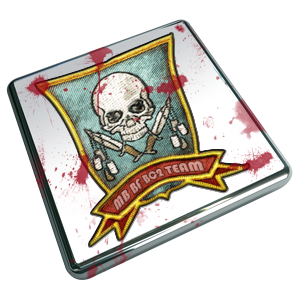
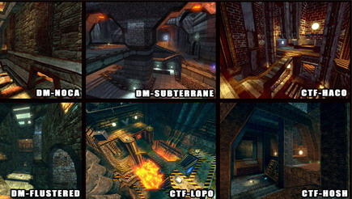
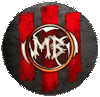

--------------- 31 December 2024 ---------------
Murderer Beasts wish you a happy New Year 2025.
--------------- 24 December 2024 ---------------
Murderer Beasts wish you a happy Merry Christmas.
--------------- 21 July 2024 ---------------
Today, we made some slight graphic design improvements to the site.
--------------- 20 July 2024 ---------------
Today we updated the Gallery section of the site, adding more new photos from various clan events. We hope you enjoy them.
--------------- 14 July 2024 ---------------
Hello everyone.
It's with great pleasure that we are launching our old Murderer Beasts 2010 website online today. The goal is nostalgic, serving those who wish to reminisce about the old days of our childhood spent with this beloved clan. We hope you enjoy it and have a wonderful trip down memory lane while browsing.
--------------- 27 April 2010 ---------------
MB team of Dota Falls Down in first round of Dota Razer Global Challenges Cup.
Our team lose 0-1 versus Super Hot cockRoaches clan.
--------------- 26 April 2010 ---------------
Our Defense of the Ancients team begins tomorow in www.dota-league.com
the Dota Razer Global Challenges Cup.
Our team play in Group 11 versus Super Hot cockRoaches clan.
Good luck mates.
--------------- 25 June 2010 ---------------
We present you our new Battlefield Bad Company 2 logo team.

--------------- 17 June 2010 ---------------
Murderer Beasts open today a Battlefield Bad Company 2 game team.
Our game modes are: Rush, Team Death Match & Conquest
--------------- 28 May 2010 ---------------
Murderer Beasts are now in
Visit and join us.
--------------- 11 April 2010 ---------------
Murderer Beasts open today a Defense of the Ancients game team.
You can find them in Electronic Sports League
--------------- 6 April 2010 ---------------
Murderer Beasts in
You can now subscribe and add as friend in our You Tube channel.
Join us and see our movie online.
--------------- 29 August 2009 ---------------
Murderer Beasts Unreal Tournament team are over.
Unfortunately after a unfair no show up versus TnH clan to take the lead in iCTF international ladder, we have decided leave the game and the system corruption of Clan Base too.
Where are the Murderer Beasts now? We are now a little group of 4 fellows playing Guild Wars and Call of Duty 5 only just for fun.
Thanks to all who have played with us and made Murderer Beasts one of the best clans in Europe for these past eight years old.
This site will continue online to remember the Murderer Beasts and all this good moments together in
Unreal Tournament. A tribute to all who have played with us.
--------------- 17
June 2009 ---------------
Our hundredth match in International Ladder iCTF zp of Clan
Base.
The match was versus SQUAD clan.
http://clanbase.ggl.com/warinfo.php?wid=8997199
--------------- 14 May 2009 ---------------
Finaly our server IP: 85.234.148.28:7777
We decided to buy a UK server on a data center in London.
--------------- 28 April 2009 ---------------
Recruting if OFF to iCTF & iTDM teams.
Thanks to all who tried his luck in Murderer Beasts and welcome to the
new members.
--------------- 02 April 2009 ---------------
Murderer Beasts reopen today the Unreal Tournament division.
We are recruting some skilled portuguese players to iCTF
& iTDM teams.
--------------- 30 March 2009 ---------------
Murderer Beasts close today the Unreal Tournament III
division.
It's very hard play this game without Zero Ping server's and
ladders.
--------------- 25 March 2009 ---------------
Murderer Beasts open today a official teams of Call of
Duty.
COD
4 (TDM + SD) & COD 5 (TDM + CTF)
We are recruting some skilled portuguese players.
If you want join us send a e-mail to murdererbeasts@gmail.com
--------------- 17 March 2009 ---------------
Murderer Beasts are back.
One year have past and we are back to play again.
We are try to play Unreal Tournament III.
--------------- 26 January 2008 ---------------
Murderer Beasts are now preparing the new Project.
A
Team of Age of Conan Hyborian
Adventures
a new mmorpg
online to start on 20 May of 2008.
--------------- 20 January 2008 ---------------
Murderer Beasts have closed the Unreal
Tournament III division.
Without active players we were forced to close the
division.
--------------- 06 January 2008 ---------------
ABT 1.2
Mutator for UT3 is out!
Features:
- Disables those annoying arrows in CTF, WAR and vCTF
- Disables "animated" Taunts while walking (Taunt/Fire and
Taunt/Movement)
- Disables RespawnProtection
- Disables boosting teammates (Instagib only, does not
affect other gametypes)
- Adds AdminPause: Login as an Admin, type "mutate pause"
to pause the game. To unpause type "mutate unpause" after a countdown
the game continues and optional automatic adminlogout
- If somebody joins the server while the game is paused it
will continue immediately!
- Switching to spectator mode ("mutate spectate") without
reconnecting and vice versa ("mutate join")
- Everything can be switched on/off (True/False) in the
UTABTv1_2.ini
Download
--------------- 31 December 2007 ---------------
Murderer Beasts wish you happy New Year 2008!
--------------- 24 December 2007 ---------------
Murderer Beasts wish you a Merry Christmas!
--------------- 22 December 2007 ---------------
HOLP Hardcore Oldskool Low Poly Map
Pack Released.

CTF-Lopo/CTF-Haco/CTF-Turbo/CTF-Ultra/CTF-Hosh
DM-Noca/DM-Subterrane/DM-Gritt/DM-Flustered
HOLP Map Pack
--------------- 20 December 2007 ---------------
Murderer Beasts take the Gold in third
division!!!!
we defeated Mo0n[$]tarS* clan
in an exciting match that occurred
in the Final of iTDM
OpenCup Fall 2007 by 1506-1371 Report.
GG mates =)
--------------- 19 December 2007 ---------------
UT3 Linux Server Package Released.
The Linux server is now available for download.
It is built from the 1.1 patch, and is network compatible
with all retail UT3 clients.
The package is quite big, coming in
at 1.6GB
Mirror 1 & Mirror 2
--------------- 18 December 2007 ---------------
Murderer Beasts take the Gold in second
division!!!!
We defeated »Önslaught« clan in an exciting match that occurred
in the iDOM OpenCup Fall 2007 by 6-2 Report.
GG mates =)
--------------- 10 December 2007 ---------------
UT3 Beta Patch 4 To Become Official
Patch 1.1
UT3 Patch 1.1
--------------- 06 December 2007 ---------------
Murderer Beasts are in Final of iDOM OpenCup Fall 2007.
We defeated Dj clan in an
exciting match that occurred
in the Semi-Final by 6-4 Report.
--------------- 05 December 2007 ---------------
Murderer Beasts are playing
in Unreal Tournament III iCTF
Quick Cup 2007.
--------------- 02 December 2007 ---------------
Murderer Beasts are in the Final of iTDM OpenCup Fall 2007.
We defeated »Önslaught« clan
by 1469-1413 Report.
--------------- 28 November 2007 ---------------
Murderer Beasts are in the Semi-Final of ZP iDOM OpenCup Fall 2007.
We defeated the =OUTSIDERZ= clan by 6-2 Report.
--------------- 23 November 2007 ---------------
Unreal Tornament III comes
out today in several stores.
Murderer Beasts are going to play iCTF, iTDM and TDM mods.
--------------- 05 November 2007 ---------------
Good news to our Unreal
Tournament Division.
Murderer Beasts won't leave anymore Unreal Tournament
game.
After an agreement with some players of Serial Numbers clan,
they came back to join us.
--------------- 30 October 2007 ---------------
Murderer Beasts have already
the new Logo 2008.
This new Logo made by Assassin was inspired in Unreal
Tornament III.

--------------- 25 October 2007 ---------------
After playing about 7 years
old, Murderer Beasts decided leave
our "old friend"
Unreal Tournament game in the end of Fall Cup 2007.
--------------- 11 October 2007 ---------------
Murderer Beasts are going to
play the new Unreal Tournament III.
We are recruiting to Capture the
Flag and Team DeathMatch.
If you wanna play too, join us!
Visit us in #MB.Clan or send a e-mail to murdererbeasts@gmail.com
--------------- 01 October 2007 ---------------
Murderer Beasts gonna play
the Unreal Tournament Open Cup Fall 2007.
--------------- 16 September 2007 ---------------
Murderer Beasts wins
today another award.
Unreal Tournament Team take the Gold in
XL Party Loures Lan on 5on5 iCTF zp.
The final was versus uP (UnderWorld Preachers) clan:
Duku (MB map) MB 4 - 1 uP
Dreary (uP map) MB 0 - 1 uP
BrokenLimits (Both map) MB 3 - 0 uP
MB Lineup:
dYpPer
(defender)
João (defender)
UnbreaK (free)
Silvercool (attack)
Morgan (attack)
Congratulations guys =)
--------------- 17 August 2007 ---------------
Murderer Beasts are
back to the international ladder 5on5 iCTF zp of Clan Base.
--------------- 12 July 2007 ---------------
After six years Assassin our team leader
decided to retire from UT arenas.
Vansik' is now the new team leader of Unreal
Tournament division.
--------------- 03 July 2007 ---------------
Murderer Beasts are
back again to the World of Warcraft.
Grim Batol was the server choice. You are looking
for a clan?
Join us we are recruiting.
--------------- 02 July 2007 ---------------
We made today six
years old.
Happy birthday Murderer Beasts.
--------------- 26 June 2007 ---------------
We made a new area in
"Members" section, the "Old Murderer Beasts Members".
If you were a Murderer Beasts member and want apear in this new
section,
send us a e-mail to murdererbeasts@gmail.com with
your all stuff and photo.
--------------- 23 June 2007 ---------------
Murderer Beasts are back to the Garage Days!
Like in the old times =)
--------------- 22 June 2007 ---------------
After one month
hibernating, our Unreal Tournament team is back.
With new players this new young team is
going to work hard this summer to get,
once more, our clan back to the top. Good
luck guys.
--------------- 21
June 2007 ---------------
Hi guys we are back again and our
web page too.
I hope you enjoy the new look of our web page.
|